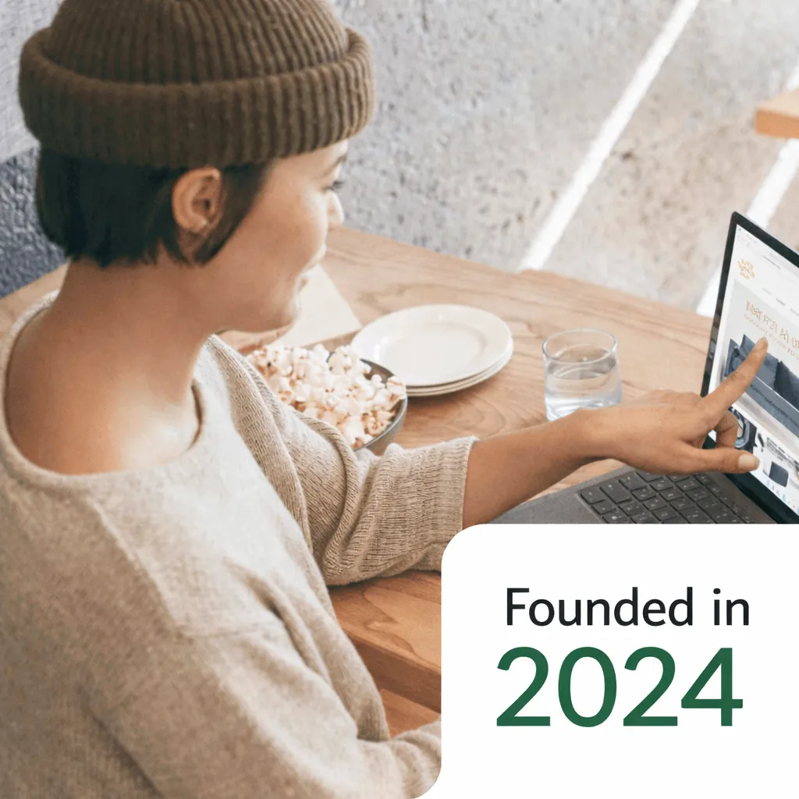

About Oasis of Change
Building a more sustainable digital future

Oasis of Change was founded to promote digital sustainability through low-carbon, energy-efficient websites and practical innovation that helps people rethink the environmental impact of technology.
Our Mission
To promote digital sustainability.
Our Vision
A future where digital sustainability is a core part of how people build, use, and understand technology, with lower-impact digital practices clearly understood, widely adopted, and recognized as a standard of responsible technology.
How Oasis of Change was founded
01
A problem was identified
Gabriel first encountered the internet's energy use when he learned that a single Google search uses enough energy to power a 10-watt light bulb for 108 seconds. That single fact opened a wider question about how websites and online systems are built.
02
Two interests came together
Web development and sustainability were combined into one focused direction: creating lower-impact digital experiences.
03
A mission took shape
Oasis of Change was founded to prove that digital sustainability is not only possible, but something that can be implemented at scale.

Founder
Gabriel Dalton
Gabriel Dalton is the founder of Oasis of Change, a nonprofit focused on digital sustainability and climate-conscious technology. After teaching himself to code at age 10, he began exploring how websites and digital infrastructure impact energy consumption, emissions, and global resources.
Today his work focuses on building low-carbon websites, improving digital efficiency, and helping organizations reduce the environmental footprint of the internet. His work in sustainable web development earned him the Youth Impact & Innovation Award at the 2025 Vancouver Awards.
Leadership
Board of Directors
Nigel Philips
Chair
Catherine Longul
Treasurer
Our Values
Transparency & Integrity
We believe trust matters. We are committed to being honest, accountable, and clear about our work so that the impact we create is real, measurable, and credible.
Sustainability
We strive to ensure that our projects create meaningful impact in ways that are environmentally and operationally sustainable over the long term.
Accessibility
We are committed to making our platforms, projects, and subsidiaries accessible and inclusive, including for persons with disabilities.
Innovation
We believe progress requires fresh thinking. We are committed to developing new ideas and solutions rather than remaining stuck in outdated ways of doing things.
Community
We recognize that lasting change is strongest when people work together. We value alignment with the communities we serve, including the Vancouver community, to create more meaningful and effective impact.
Impact
At the heart of everything we do is a commitment to creating real change. Through accessibility, innovation, sustainability, and community building, we aim to make a meaningful impact.
Our Name
A name chosen with intention
Every part of our name carries meaning. Together, they describe both a place we're building and the action we're taking to get there.
Oasis
A place of renewal, possibility, and hope. The foundation we're creating for communities and the planet.
Of
The connection between vision and action, linking what we believe to what we build.
Change
The action that turns hope into something real. Measurable progress toward a sustainable digital future.